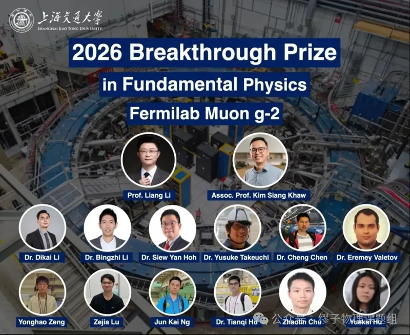
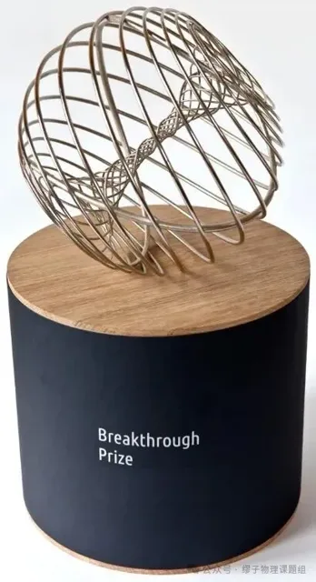
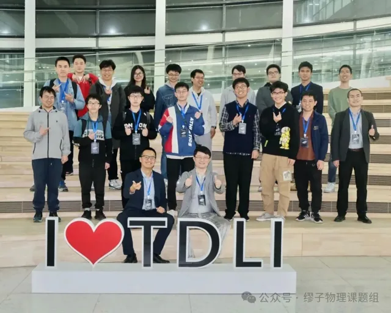
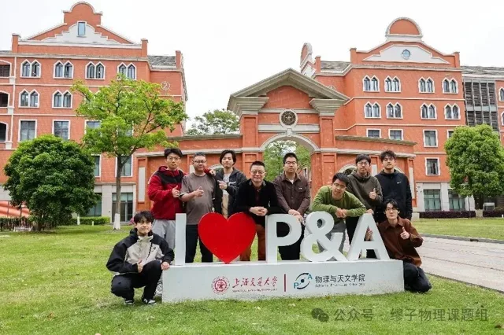
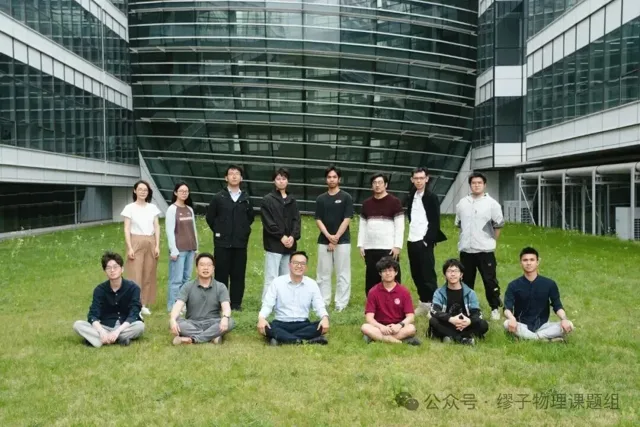

The 2026 Breakthrough Prize in Fundamental Physics has been awarded to the Muon g-2 Collaborations — three generations of experiments at CERN, Brookhaven National Laboratory and Fermilab — for decades of pioneering work pushing the limits of measurement precision. The US$3 million prize is shared among 376 researchers, including members of the Shanghai Jiao Tong University muon physics team, one of the core contributing groups.


The final Fermilab result, released in 2025, determined the muon's anomalous magnetic moment to 127 parts per billion — the most precise measurement to date and about 30,000 times more precise than CERN's first experiment in 1965. Because the muon g-2 is sensitive to new particles and interactions, this measurement remains one of the most stringent tests of the Standard Model.



SJTU joined the Fermilab Muon g-2 Collaboration in 2012 as an initial member institution. The SJTU team is co-led by Prof. Liang Li (School of Physics and Astronomy) and Kim Siang Khaw (Tsung-Dao Lee Institute), and has contributed across the analysis chain: reconstruction and analysis of the anomalous precession frequency, high-precision magnetic-field measurement and calibration, beam-dynamics corrections, modelling of coherent betatron oscillations, and studies of the electromagnetic calorimeters and their SiPM readout.
Kim Siang Khaw joined the collaboration in 2015, served as co-convener of the anomalous precession frequency analysis and as a member of the executive committee, and led the Nearline system for fast event reconstruction during commissioning. Since joining TDLI in 2019, he has co-led the phase-acceptance beam-dynamics working group and led the betatron-oscillation systematics group, developing a non-parametric Gaussian-process method for modelling the coherent betatron oscillation.






Congratulations to everyone in the collaboration, and to all current and former members of our group who contributed to the measurement!
Report (in Chinese): INPAC, Shanghai Jiao Tong University
2026年度基础物理学突破奖授予缪子反常磁矩（Muon g-2）合作组——先后在欧洲核子研究中心（CERN）、布鲁克海文国家实验室和美国费米国家加速器实验室（Fermilab）开展的三代实验——以表彰其数十年来不断突破测量精度极限的开创性工作。300万美元奖金由376位研究人员共享，其中包括作为核心贡献团队之一的上海交通大学缪子物理团队成员。
2025年发布的费米实验室最终结果将缪子反常磁矩的测量精度提高到127 ppb（十亿分之一百二十七），是迄今最精确的测量，比1965年CERN首次实验的精度提高了约30,000倍。由于缪子g-2对新粒子和新相互作用十分敏感，这一测量至今仍是对标准模型最严格的检验之一。
上海交通大学于2012年作为首批成员单位加入费米实验室Muon g-2合作组。交大团队由物理与天文学院李亮教授和李政道研究所许金祥共同领导，在分析链条的多个环节作出贡献，包括反常进动频率的重建与分析、高精度磁场测量与刻度、束流动力学修正、相干横向振荡（betatron振荡）建模，以及电磁量能器及其SiPM读出的研究。
许金祥于2015年加入合作组，曾任反常进动频率分析联合召集人及执行委员会成员，并在调试阶段负责用于快速事例重建的Nearline系统。2019年加入李政道研究所以来，他共同领导了相位接受度束流动力学工作组，并领导betatron振荡系统误差工作组，发展了基于高斯过程的非参数方法来描述相干betatron振荡。
祝贺合作组全体成员，也祝贺为这一测量作出贡献的课题组全体现任和前任成员！
相关报道（中文）：上海交通大学粒子与核物理研究所（INPAC）